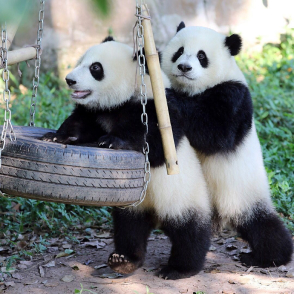
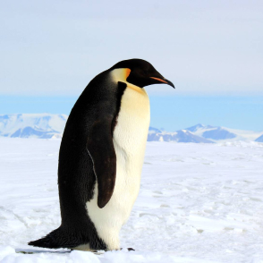

The site was founded on the basis of a volunteer movement to protect and care for animals.
How it works
The main goal is to help the animals, as well as the nature reserves and zoos where they are kept. We are currently working on video projects targeting pandas in China, eagles on an island near Los Angeles, alligators in Florida and gorillas in the Congo. These have a total of more than 1,500 mammals and reptiles.

GIANT PANDAS
Native to Southwest China
EAGLES
Native to South America
GORILLAS
Native to Congo
ALLIGATORS
Native to Southeastern U. S.
TWO-TOED SLOTH
Mesoamerica, South America
CHEETAHS
Native to Africa

PENGUINS
Native to Antarctica
Pick and feed a friend
We know the animals bring you joy, and in these extraordinary times, we’re glad.
During a time when the COVID-19 epidemic is touching all of our lives, we’re proud and glad that people around the world find joy in PetStory.
Even though the zoo has reopened, we need you now more than ever to help us deal with these problems. Please consider a gift to our Emergency Support Fund.
How it works
Pay with card
Payment goes to the zoo
Your favourite animal gets delicious dish
Testimonials
Michael John
Local Austria · Today
The best online zoo I’ve met. My son delighted very much ljves to watch gouillas. Online zoo is one jf the ways to instill a love for animals.The best
online zoo I’ve met. My son delighted very much ljves to watch gouillas. Online zoo is one jf the ways to instill a love
for animals.The best online zoo I’ve met. My son delighted very much ljves to watch gouillas.
The best online zoo I’ve met. My son delighted very much ljves to watch gouillas. Online zoo is one jf the ways to
instill a love for animals.The best online zoo I’ve met. My son delighted very much ljves to watch gouillas. Online zoo
is one jf the ways to instill a love for animals.
Oskar Samborsky
Local Austria · Yesterday
My son delighted very much ljves to watch gouillas. Online zoo is one jf the ways to instill a love for
animals.The best
online zoo I’ve met. My son delighted very much ljves to watch gouillas. Online zoo is one jf the ways to
instill a love
for animals.The best online zoo I’ve met. My son delighted very much ljves to watch gouillas.
The best online zoo I’ve met. My son delighted very much ljves to watch gouillas. Online zoo is one jf the
ways to
instill a love for animals.The best online zoo I’ve met. My son delighted very much ljves to watch gouillas.
Online zoo
is one jf the ways to instill a love for animals.
Fredericka Michelin
Local Austria · Yesterday
The best
online zoo I’ve met. My son delighted very much ljves to watch gouillas. Online zoo is one jf the ways to instill a love for
animals. The best
online zoo I’ve met. My son delighted very much ljves to watch gouillas. Online zoo is one jf the ways to
instill a love
for animals.The best online zoo I’ve met. My son delighted very much ljves to watch gouillas.
The best online zoo I’ve met. My son delighted very much ljves to watch gouillas. Online zoo is one jf the
ways to
instill a love for animals.The best online zoo I’ve met. My son delighted very much ljves to watch gouillas.
Online zoo
is one jf the ways to instill a love for animals.
Mila Riksha
Local Austria · Yesterday
My son delighted very much ljves to watch gouillas. Online zoo is one jf the ways to instill a love for
animals.The best
online zoo I’ve met. My son delighted very much ljves to watch gouillas. Online zoo is one jf the ways to
instill a love
for animals.The best online zoo I’ve met. My son delighted very much ljves to watch gouillas.
The best online zoo I’ve met. My son delighted very much ljves to watch gouillas. Online zoo is one jf the
ways to
instill a love for animals.The best online zoo I’ve met. My son delighted very much ljves to watch gouillas.
Online zoo
is one jf the ways to instill a love for animals.